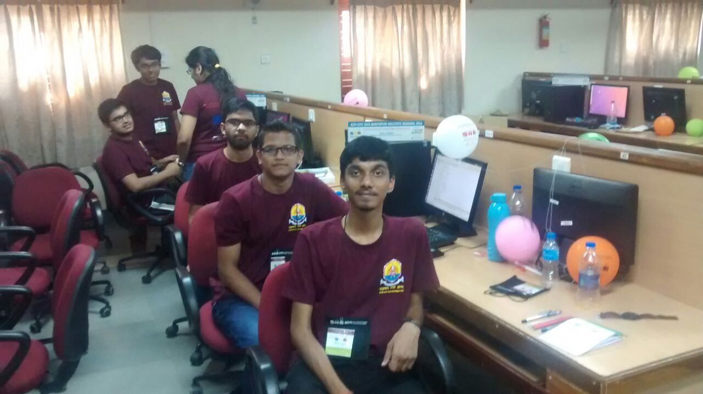

ACM International Collegiate Programming Contest.
Association of Computing Machinery International Collegiate Programming Contest.
Organized Every Year.
Once in the lifetime of every passionate programmer!
Our journey to ACM ICPC
- It all starts here at Chiplun! I and Omkar Jadhav at the Chiplun Railway Station.

- Waiting for the train to Kayamkulam.
- The prestigious Amrita Vishwa Vidyapeetham.
- The Mata Amritanandamayi Math and the beautiful backwaters.
- On the way to the math through the bridge on the backwaters.
- Enjoying the backwaters scenery.
- Enjoying the magnificent private beach.
- We met one of the great programmers of the world. Praveen Dhinwa and Triveni Mahatha.
- Morning Beach Walk the next day.
- Sand crafting on the beach - our team name, ACROBOTS.
- After all the hard work.
- My friend and teammate Anand Pisal enjoying the water.
- My first ever Codechef swag.
- Thanks to Codechef for sponsoring the swags.
- At the ACM ICPC Amritapuri Regionals 2016 Banquet Dinner.
- Finally, the day of which every programmer dreams of - The ACM ICPC Amritapuri Regional Contest 2016 Contest Arena.
- Each unique color of the balloon represents the ICPC Problem Statements. If the teams solve a particular problem in the contest, they are gifted the balloon representing the problem.
- My team at the contest arena.
- ICPC Asia Amritapuri Contest Arena
- We (the ACROBOTS) solved 5 problems with 0 wrong submissions.

- At Kayamkulam Railway Station. Returning home after a fantastic experience.